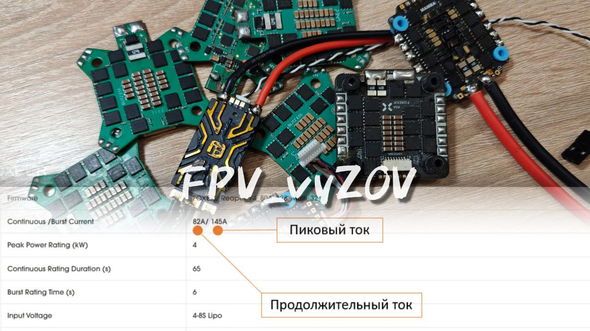
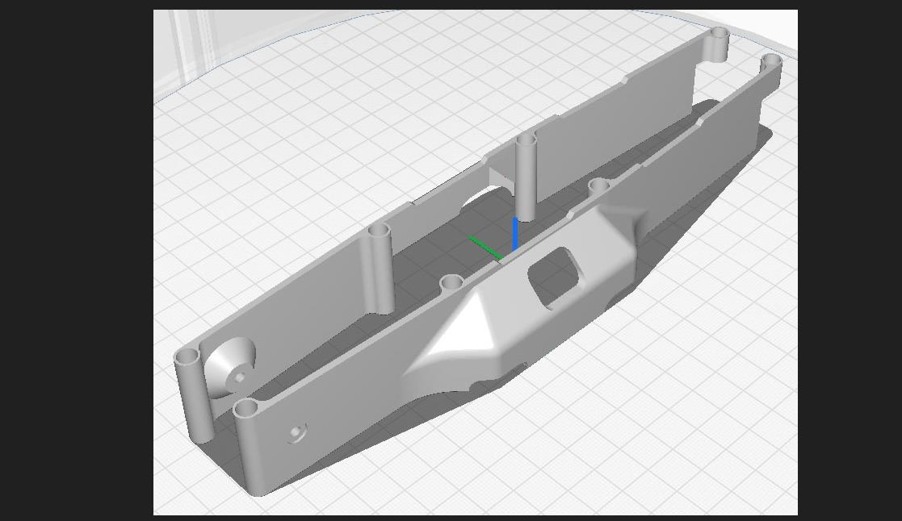
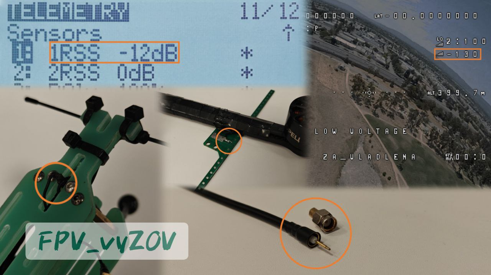

Подбор регулятора оборотов или почему важно всегда иметь запас?
Сегодня очень многие сборщики дронов и пилоты выбирают регуляторы по экономическим соображениям. Однако, всегда стоит помнить о том, что надежность аппарата также важна, как и его цена.
Одной из ключевых характеристик ESC является ток, с которым он сможет работать без повреждений. Важно понимать, мотор и воздушный винт определяют потребление, а регулятор лишь снабжает их энергией. Также значения тока разделяются на 2 типа: продолжительный (continuous current), пиковый (burst current). Пиковый ток должен протекать не более 5-6 секунд.
Рассматривая конкретный пример, производитель заявляет, что мотор и винт потребляют 50А. Регулятор также имеет максимальный продолжительный ток 50А. Замер этот произведен в идеальных условиях или вовсе взят из характеристик компонентов на плате.
В реальных условиях, сами компоненты платы могут иметь большую температуру, быть с отклонениями от заявленных значений (что допускает их производитель), а также винтомоторная группа потребляет больше тока, характер пилотирования включает в себя «прогазовки» и резкое маневрирование.
❕Рекомендуем брать запас около 35% от максимального тока мотора при выборе регулятора! В примере для мотора 50А (50А*1.35) будет необходим регулятор 67,5А (65-70А).
Также к выходу из стоя вашего оборудования, даже при верном подборе, могут привести некорректные настройки в части PID-регулятора и фильтрации гироскопа.
Помните, аппараты используются в сложных условиях и падения (отказы) с полезной нагрузкой могут быть опасны!
при поддержке
#ОБУЧЕНИЕ
#регулятор_оборотов
Это вложение из поста t.me/platforma_fpv/1346/1673
PIDы и фильтры для новичков в Betaflight 4.4 - лекция для новичков.
#ОБУЧЕНИЕ
#PIDы
#ПИДЫ
Это вложение из поста t.me/platforma_fpv/1346/1350

PID-регуляторы и их настройка - лекция.
#ОБУЧЕНИЕ
#PIDы
#ПИДЫ
Это вложение из поста t.me/platforma_fpv/1346/1349
Углубленная настройка полетного контроллера. Фильтрация гироскопа, PID-тюнинг.
#ОБУЧЕНИЕ
#PIDы
#ПИДЫ
Это вложение из поста t.me/platforma_fpv/1346/1351
#ARDUPILOT
Руководство по настройке ArduPilot :
подбор оборудования, установка;
-
настройка фильтров;
-
настройка ПИДов;
-
throttle
➤
Сборка
Это вложение из поста t.me/platforma_fpv/1320/1321

Нет детали – напечатай! Нет модели – нарисуй!
Или, как и где научиться создавать простые 3D модели (программы для освоения)?
Любая печать начинается с 3D-модели. Чаще всего модели распространяются в формате «.STL». Этот формат отлично подходит под загрузку его в программу для принтера и дальнейшую печать, но не дает возможности изменить какие-либо параметры модели, кроме ее масштабирования. Сама модель представляет из себя поверхности, огромное количество маленьких треугольников.
ℹ️ Ниже будет рассмотрено ПО для создания 3Д моделей конкретно под ваши задачи, по вашим размерам и ее дальнейшее редактирование.
Этот процесс по своей логике схож – сначала рисуем плоскую форму (эскиз), далее вытягиваем или вырезаем его (в самых простых даны только геометрические фигуры).
Программы для моделирования называются САПР (CAD) – системы автоматизированного проектирования.
⚠️ Важно! Простые формы и детали можно сделать в любой из программ описанных ниже, отличаться будут только возможности по редактированию моделей далее и сложность освоения конкретного ПО.
1. TinkerCAD (Autodesk) (
Непроверенная внешняя ссылка
https://www.tinkercad.com/
https://www.tinkercad.com/
) – веб-программа для 3D моделирования. Не требует скачивания, максимально проста в освоении, т.к. предлагает работать с простыми формами и менять их взаиморасположение и размер.
Рекомендуем использовать ее для разовых и простых деталей без необходимости их перестраивать или редактировать.
Бесплатно, доступен только с VPN.
Набор обучающих видео:
Непроверенная внешняя ссылка
https://rutube.ru/plst/505711
https://rutube.ru/plst/505711
2. 123D Design (Autodesk) (
Непроверенная внешняя ссылка
https://autodesk-123d-design.en.lo4d.com/windows
https://autodesk-123d-design.en.lo4d.com/windows
) – простейшая САПР дающая возможность полноценно работать с эскизами и распространяемая бесплатно на сайте разработчика. Отсутствует дерево построения (визуальное представление сделанных действий), могут возникать проблемы при работе со сложными моделями. Проста в понимании и работе.
Рекомендуем использовать ее для несложных моделей, без использования сборок из нескольких деталей.
Бесплатно
Набор обучающих видео:
Непроверенная внешняя ссылка
https://youtube.com/playlist?list=PLX6uTXsgfhHoskIhg8CsD_YOhx6WK-MXg&si=8wLZedUa3O7vG1DF
https://youtube.com/playlist?list=PLX6uTXsgfhHoskIhg8CsD_YOhx6WK-MXg&si=8wLZedUa3O7vG1DF
КОМПАС-3D
(Аскон)(
Непроверенная внешняя ссылка
https://kompas.ru/kompas-3d/download/
https://kompas.ru/kompas-3d/download/
) – полноценная САПР Российской разработки, закрывающая большинство задач проектирования (моделирования). Полноценная работа с распространенными форматами файлов, большое количество инструментов и высокая производительность. Освоение такой программы займет больше времени чем двух предыдущих, но расширит ваши возможности.
Рекомендуем использовать ее для задач практически любой сложности, сборок и т.д.
Программа платная – Домашняя версия 1500 ₽/год (есть пробная версия).
Есть возможность получить программу по цене интернета)
Набор обучающих видео:
Непроверенная внешняя ссылка
https://youtube.com/playlist?list=PLikcdO5ttHnBdEyQoyR2_xC8mX6fKBdiN&si=5Ibz1VNGBEAku_RC
https://youtube.com/playlist?list=PLikcdO5ttHnBdEyQoyR2_xC8mX6fKBdiN&si=5Ibz1VNGBEAku_RC
Solidworks
(Dassault Systemes) – одна из наиболее функциональных и распространенных САПР в мире. Совмещает в себе множество функций по построению и изучению 3D-моделей. Требует большого времени на освоение, но при должном навыке дает наибольшие возможности из рассмотренных вариантов.
Рекомендуем использовать ее для задач практически любой сложности, сборок и т.д.
Программа платная – Стандартная версия 2820 $/год (есть пробная версия).
Есть возможность получить программу по цене интернета)
Набор обучающих видео:
Непроверенная внешняя ссылка
https://youtube.com/playlist?list=PLbMSFBKxOiBMWIFhAIRRW7rYClDYRuQk4&si=5gi_glLh_X4RbJLX
https://youtube.com/playlist?list=PLbMSFBKxOiBMWIFhAIRRW7rYClDYRuQk4&si=5gi_glLh_X4RbJLX
Таким образом вы можете выбрать программу исходя из ваших задач. Нет необходимости тратить десятки часов на обучение ради одной модели. В обратном же случае, если вы понимаете, что есть необходимость создавать много деталей с более сложной формой – лучше выберите программу старшего уровня.
⚠️
Набор вариантов ПО намного шире описанного, каждый из них будет предпочтителен в своей ситуации, под свои задачи или более удобен конкретно вам.
при поддержке
#Век_живи__Век_учись
Это вложение из поста t.me/platforma_fpv/1346/1672

Проверка работоспособности оборудования по показателю RSSI dBm
.
Перед совершением полета (особенно при использовании многоразовых аппаратов) необходимо проверить состояние системы управления, убедиться, что все функционирует исправно.
Для этого выставляем на передатчике мощность
10 мВт
и относим аппарат примерно на один метр (
).
⚠️ Важно убедиться, что поляризации антенны соответствуют друг другу (вертикальная-вертикальная/ горизонтальная-горизонтальная и т.д.). Антенны не должны находиться друг к другу «слепыми зонами» диаграммы направленности (у дипольных антенн – торцы, у направленных антенн задняя полусфера).
После этого включите аппарат, после установления соединения проверьте показатели RSSI dBm на OSD или на странице телеметрия вашей аппаратуры управления (
MDL>Telemetry
) (Рис 1,2).
✔️ Для систем на частоте 915 МГц хорошими считаются значения
до -30 дБм
.
✔️ Для систем на частоте 2.4 ГГц хорошим считаются значения
до -40 дБм
Помните, что при прошивке оборудования и смещении рабочей частоты выходная мощность может падать, проведите несколько замеров с разными образцами оборудования для определения контрольных значений.
Если значения отличаются в меньшую сторону проверьте (рис 3,4,5):
1. Соответствие передающей и приемной антенн выбранному диапазону частот.
2. Целостность коаксиальных кабелей. При повреждении внешнего экрана или центральной жилы замените антенну или «пигтейл». Исключите скручивание коаксиального кабеля.
3. Отсутствие повреждений коаксиального кабеля в местах пайки разъемов. Внешний экран легко отрывается от разъема.
4. Плотность прилегания/закручивания антенных разъемов. При множественной установке и демонтаже контактирующие части нередко повреждаются.
5. Расположение антенн. Расположение антенн на токопроводящих частях рамы может значительно влиять на характеристики и ухудшать силу сигнала.
при поддержке
#ОБУЧЕНИЕ
#RSSI
Это вложение из поста t.me/platforma_fpv/1346/1671
#ОБУЧЕНИЕ
Сборка FPV
➤ PIDы для FPV
➤ ArduPilot
LoRa
Невозможно отобразить содержимое https://t.me/platforma_fpv/229/1329
Что такое LoRa, как работает, для чего нужна.
📝
Невозможно отобразить содержимое https://t.me/platforma_fpv/229/1331
Принципы работы и модуляции.
📝
Невозможно отобразить содержимое https://t.me/platforma_fpv/229/1331
Ключевые основные параметры модуляции.
➤
➤ Тренировки
Веб-страница создана автоматически на основе поста пользователя ПЛАТФОРМА_FPV